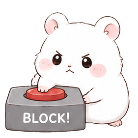
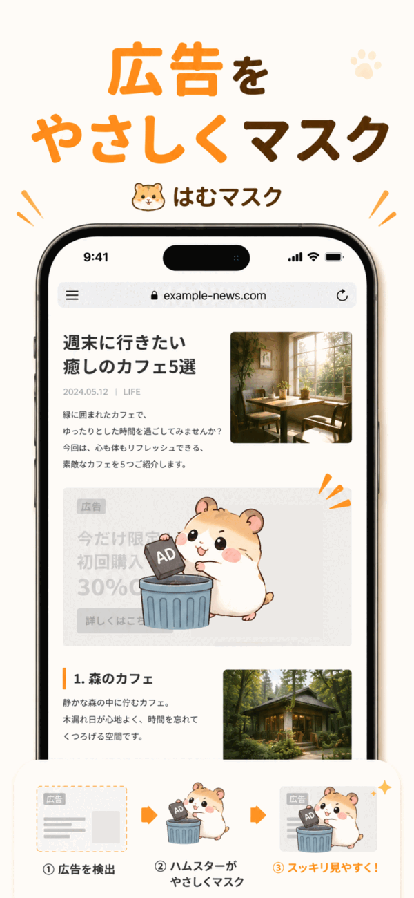

ページ内で判定
DOM要素、iframe、リンクURL、属性、表示サイズなどを使って広告候補を検出します。
はむマスクは通信を遮断する広告ブロッカーではありません。Safariに表示された広告候補の領域に、ハムスター画像のマスクを重ねます。
DOM要素、iframe、リンクURL、属性、表示サイズなどを使って広告候補を検出します。

検出した広告候補領域を、ページの内容を読みやすく保つ半透明のマスクで覆います。
誤検出や確認したい広告がある場合は、マスクのメニューから解除できます。
iOSの仕様上、アプリをインストールしただけではSafari側で自動有効化されません。設定アプリからSafari拡張機能を許可してください。
iPhoneの設定から、アプリ、Safari、機能拡張へ進みます。
はむマスクの設定で「拡張機能を許可」をオンにします。
アクセス権設定で「すべてのWebサイト」を「許可」にします。


広告ではない領域がマスクされた場合や、内容を確認したい場合は、マスクの操作メニューから解除できます。
はむマスクは汎用的な広告候補検出を目指していますが、すべての広告を完全にマスクできるとは限りません。見つけた問題はサポートページから報告できます。
閲覧ページの内容、URL、個人情報、閲覧履歴、広告候補の判定結果を外部サーバーへ送信しません。広告候補の判定処理はブラウザ内で完結します。